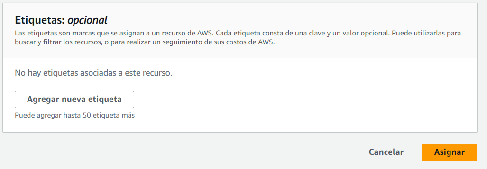
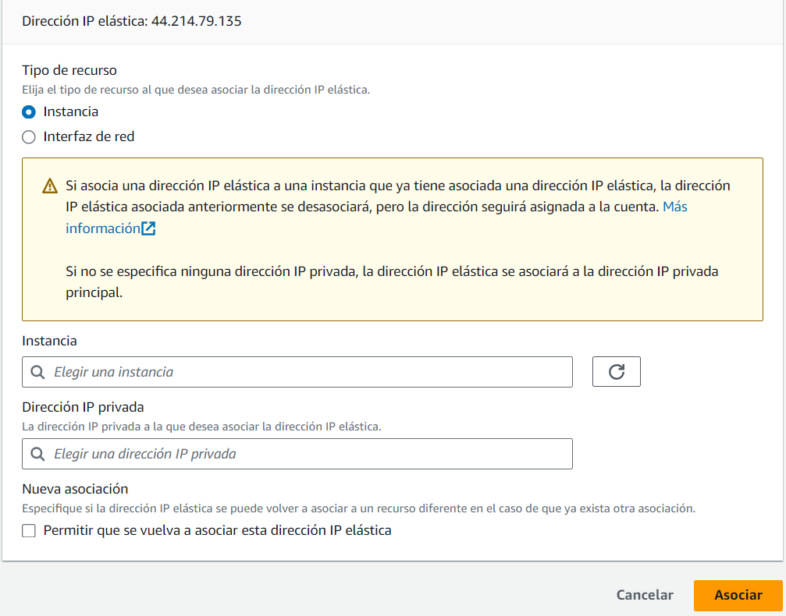

Instalacion_PilaLAMP_enRHEL
Creacion_completa_pila_LAMP
Creación de una maquina en un laboratorio de AWS.
1º Lo primero que tenemos que hacer es Lanzar la instancia.

2º Seleccionamos el S.O., que en este caso es Rethat.
3º Elegimos el tipo de instancia. ( Minimo 4 Gb de RAM ).
4º Seleccionamos el par de claves que nosotros ya hemos descargado antes de iniciar el laboratorio. Nosotros la renombramos y seleccionamos Vockey.pem (la cual tendrá que tener los permisos cambiados).

5º Al grupo de seguridad le añadimos todos los servicios y la lanzamos:
Asignar una Ip a nuestra instancia.
1º Nos vamos a Direcciones IP estaticas y asignamos una nueva IP elastica:

2º Asignamos la IP

3º Una vez tenemos la IP, solo queda Asignarle a esta una instancia.

4º Seleccionamos la instancia y la asociamos. Así cada vez que reiniciemos el laboriatorio no cambiará la IP de la instancia.

Instalación de la pila LAMP
Lo primero de todo configuramos el script para que se muestren los comandos que que se ejecutan ( set -x ) y actualizamos los paquetes ( dnf update -y ).
1º Instalamos Apache.
sudo dnf install httpd -y
2º Reiniciamos el servicio.
sudo systemctl start httpd
3º Habilitar el servicio para que se inicie automáticamente después de cada reinicio.
sudo systemctl enable httpd
4º Comprobamos el estado.
sudo systemctl status httpd
5º Instalamos el sistema gestor de base de datos MySQL.
sudo dnf install mysql-server -y
6º Iniciamos el servicio.
sudo systemctl start mysqld
7º Iniciamos el servicio para que se inicie automaticamente.
sudo systemctl enable mysqld
8º Comprobamos si esta iniciado.
sudo systemctl status httpd
9º Instalamos el interprete de comandos PHP.
sudo dnf install php -y
10º Instalamos la extensión de PHP para MySql.
sudo dnf install php-mysqlnd -y
11º Reiniciamos el servicio Apache.
sudo systemctl restart httpd
12º Copiamos el archivo info.php en /var/www/html.
sudo cp ../php/info.php /var/www/html
13º Cambiamos el propietario y el grupo de directorio /var/www/html
chown -R apache:apache /var/www/html
Archivo de las variables (.env)
PMA_USER=andres
PMA_PASS=Afruruz738
PMA_DB=phpmyadmin
Instalación de las herramientas adicionales de la pila LAMP.
Lo primero de todo configuramos el script para que se muestren los comandos que que se ejecutan ( set -x ).
1º Declaramos la variables.
source .env
2º Actualizamos los paquetes.
dnf update -y
3º Instalamos los modulos necesarios para la instalacion de PHPMYADMIN.
sudo dnf install php-mbstring php-zip php-json php-gd php-fpm php-xml -y
4º Reiniciamos el servicio Apache.
sudo systemctl restart httpd
5º Instalamos la utilidad wget para poder descomprimir PHPMYADMIN.
sudo dnf install wget -y
6º Eliminamos descargas previas de PhpMyAdmin.
rm -rf /tmp/phpMyAdmin-5.2.1-all-languages.zip
7º Eliminamos instalaciones previas de phpMyAdmin.
rm -rf /var/www/html/phpmyadmin
8º Descargamos el codigo fuente de PHPMYADMIN.
sudo wget https://files.phpmyadmin.net/phpMyAdmin/5.2.1/phpMyAdmin-5.2.1-all-languages.zip -P /tmp
9º Descargamos la utilidad Unzip.
sudo dnf install unzip -y
10º Descomprimimos el Zip recien descargado.
unzip -u /tmp/phpMyAdmin-5.2.1-all-languages.zip -d /var/www/html
11º Renombramos el direcctorio de PhpMyAdmin.
mv /var/www/html/phpMyAdmin-5.2.1-all-languages /var/www/html/phpmyadmin
12º Actualizamos los permisos del directorio /var/www/html.
sudo chown -R apache:apache /var/www/html
13º Creamos el archivo de configuración a partir del archivo de ejemplo.
sudo cp /var/www/html/phpmyadmin/config.sample.inc.php /var/www/html/phpmyadmin/config.inc.php
14º Generamos un valor aleatorio de 32 caracteres para la variable blowfish_secret.
RANDOM_VALUE=`openssl rand -hex 16`
15º Cambiamos dentro del archivo de configuración para qu nos quite el fallo cuando nos conectamos a phpmyadmin. Modificamos la variable blowfish_secret en el archivo de configuración.
sed -i "s/\(\$cfg\['blowfish_secret'\] =\).*/\1 '$RANDOM_VALUE';/" /var/www/html/phpmyadmin/config.inc.php
sed "/blowfish_secret/a \$cfg\['TempDir'\] = '/tmp';" /var/ww/html/phpmyadmin/config.inc.php
16º Eliminamos si existe alguna base de datos previa de phpMyAdmin.
mysql -u root <<< "DROP DATABASE IF EXITS phpmyadmin"
17º Importamos el scrit de creación de base de datos de phpmyadmin.
sudo mysql -u root < /var/www/html/phpmyadmin/sql/create_tables.sql
18º Creamos el usuario para la base de datos y le damos privilegios.
sudo mysql -u root <<< "DROP USER IF EXISTS $PMA_USER@'%'"
sudo mysql -u root <<< "CREATE USER $PMA_USER@'%' IDENTIFIED BY '$PMA_PASS'"
sudo mysql -u root <<< "GRANT ALL PRIVILEGES ON $PMA_DB.* TO $PMA_USER@'%'"